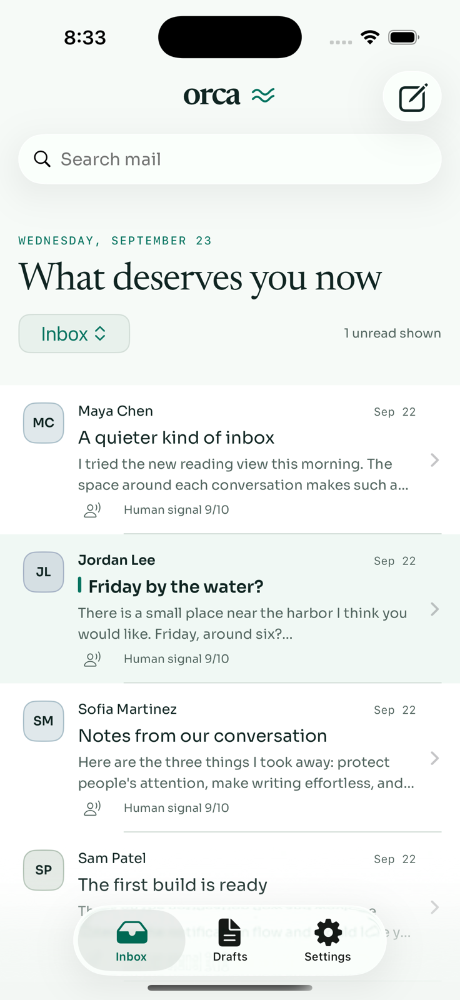
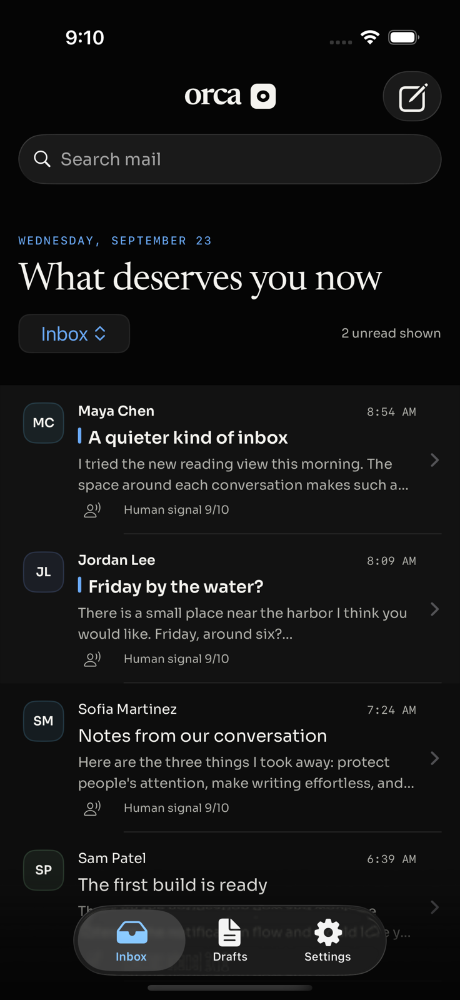
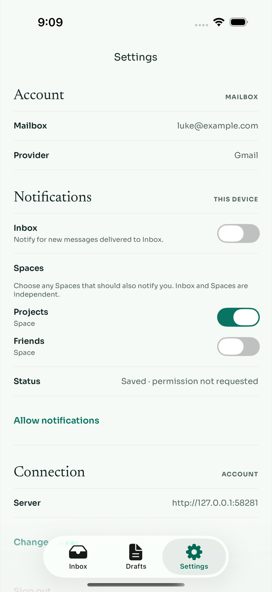
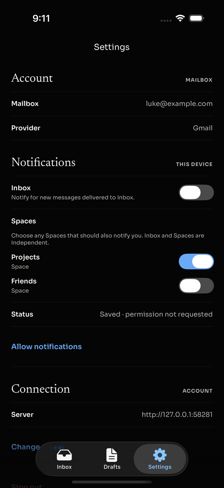

← Verification · PR #198
Write simply.
Choose what interrupts.
The header uses a native pencil control with an accessible Compose label. Notifications follow Inbox and the Spaces you choose, independently. Human Signal does not decide delivery.
A quieter Compose control

Light · native toolbar shape, no nested rectangular fill.
Dark · clear icon on Orca Black.Notification choices
Inbox is on by default. Select any number of Spaces, with or without Inbox. Turn all choices off to stop alerts. Settings are saved for this server and signed-in identity on this device; Apple permission is separate.
Delivery uses the current membership of mail destinations, collections and saved Views. Matching more than one choice produces one alert for that message. Existing Off preferences stay off during migration, and registration never floods the device with old mail.

Light · Projects selected, Inbox off after relaunch.
Dark · same persisted choices, readable selected and off controls.Verification
- Native build and 28 unit tests passed.
- Final simulator acceptance: light notification persistence (1/1) and dark controls plus persistence (2/2) passed. Earlier light control-state flow also passed. Compose opens through its accessible native toolbar action; Inbox/Space toggles survive relaunch.
- Backend: 14 scheduler tests, two route tests and one migration test passed; API typecheck passed.
- Clean, stacked, replayed and reset database gates passed with 50 required tables.
- Real fixture API round-trip passed: catalog → select Projects without Inbox → read status → unregister, with APNs disabled.
- Independent grouped review passed after correcting multi-Space ordering in the sync-status comparison.
Try it
- Open Settings → Notifications.
- Select Projects, then turn Inbox off.
- Leave Settings and relaunch Orca; Projects stays selected and Inbox stays off.
- Turn Projects off to stop alerts, or restore Inbox.
ORCA_UI_TEST_SCOPE=notifications apps/ios/OrcaUITests/run-fixture-tests.sh /path/to/connection.json SIMULATOR_UDID
Fixture mail and provider operations are synthetic. Live APNs delivery still requires physical-device acceptance.